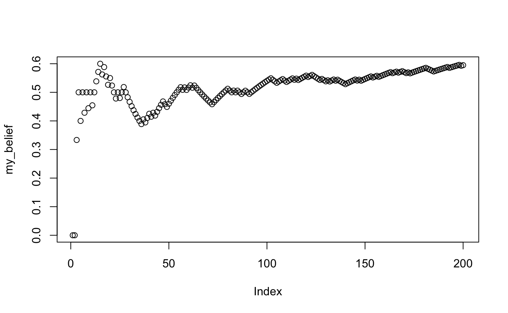
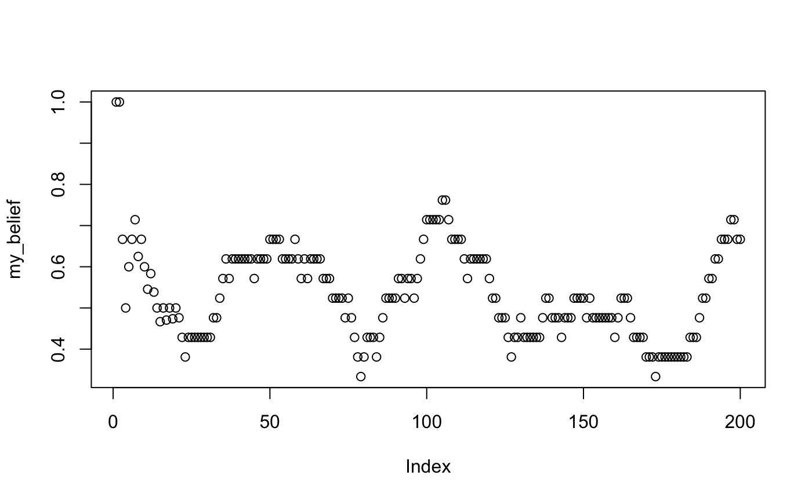

Lab4_Distributions_II.RmdIn lecture you are learning about basic probability. In this lab we will continue to learn about working with distributions in R, and we will examine issues relating to basic probability.
We will look at three conceptual issues with probability, and gain practical skills in R for organizing and managing simulation data that will be useful for the rest of this course. In all of the examples we will generate events from particular distributions and examine them.
In this concept section we will use R to generate events with specified probabilities. We will mainly use the sample() function, which we are already familiar with. This concept section explores probabilistic event generation in a few different ways by examining a few probability problems:
Each number should come up about 10000/6 = 1666.667 times.
rolls <- sample(1:6,1000, replace=TRUE) table(rolls) #> rolls #> 1 2 3 4 5 6 #> 170 154 161 170 181 164
one <- sample(1:6,1000, replace=TRUE) two <- sample(1:6,1000, replace=TRUE) combined <- one+two table(combined)/1000 #> combined #> 2 3 4 5 6 7 8 9 10 11 12 #> 0.033 0.063 0.078 0.111 0.131 0.170 0.138 0.110 0.082 0.057 0.027
Let’s compare the result of the simulation to the known probabilities. First, we need to determine the number of ways that each number can be obtained by rolling a pair of dice. We can use R to do this as well:
first <- rep(x= 1:6, each = 6) second <- rep(x= 1:6, times = 6) sum_rolls <- first+second table(sum_rolls)/length(sum_rolls) #> sum_rolls #> 2 3 4 5 6 7 8 #> 0.02777778 0.05555556 0.08333333 0.11111111 0.13888889 0.16666667 0.13888889 #> 9 10 11 12 #> 0.11111111 0.08333333 0.05555556 0.02777778 ## compare sim_result <- table(combined)/1000 true_probs <- table(sum_rolls)/length(sum_rolls) ## Difference true_probs-sim_result #> sum_rolls #> 2 3 4 5 6 #> -0.0052222222 -0.0074444444 0.0053333333 0.0001111111 0.0078888889 #> 7 8 9 10 11 #> -0.0033333333 0.0008888889 0.0011111111 0.0013333333 -0.0014444444 #> 12 #> 0.0007777778
Remember that you can use sample() to generate events with specific probabilities:
sample(c("A","B"), 20, replace = TRUE, prob = c(.8, .2)) #> [1] "A" "A" "B" "A" "A" "B" "A" "B" "A" "A" "A" "A" "A" "A" "A" "A" "A" "A" "A" #> [20] "A"
Note, conveniently, R contains a variable called letters, that is a vector of lowercase letters (and an uppercase one called LETTERS)
letters #> [1] "a" "b" "c" "d" "e" "f" "g" "h" "i" "j" "k" "l" "m" "n" "o" "p" "q" "r" "s" #> [20] "t" "u" "v" "w" "x" "y" "z" LETTERS #> [1] "A" "B" "C" "D" "E" "F" "G" "H" "I" "J" "K" "L" "M" "N" "O" "P" "Q" "R" "S" #> [20] "T" "U" "V" "W" "X" "Y" "Z"
sample(letters,50,replace=TRUE) #> [1] "l" "f" "l" "j" "m" "c" "n" "j" "v" "n" "d" "h" "h" "o" "x" "h" "u" "o" "u" #> [20] "q" "s" "e" "f" "u" "v" "z" "h" "q" "x" "i" "m" "q" "c" "y" "d" "p" "b" "c" #> [39] "a" "l" "n" "d" "j" "j" "b" "e" "y" "b" "u" "t"
my_letters <- sample(letters,50*5,replace=TRUE) # turn the vector into a matrix with 5 columns my_strings <- matrix(my_letters, ncol=5) # each row is a word, need to collapse the column to create a string paste(my_strings[1,], collapse="") #> [1] "rjxbf" # loop to collapse all of the rows into words random_strings <-c() for(i in 1:dim(my_strings)[1]){ random_strings[i] <- paste(my_strings[i,], collapse="") } random_strings #> [1] "rjxbf" "iqrrx" "zpxdf" "gcani" "qnswu" "scpva" "dwwuw" "mdlyy" "rjogx" #> [10] "trxhl" "ooico" "ltozw" "drqwy" "msqoi" "btbcb" "tobme" "ejlls" "ybfbp" #> [19] "yzmzj" "pfrqi" "eosfx" "qesiz" "ifzxb" "bjtqm" "gqkjj" "pikox" "pjxtr" #> [28] "bexpj" "vkkto" "mirdo" "vgmrf" "cgerw" "espfo" "gmjhb" "iwboa" "vafca" #> [37] "pdbze" "vzpra" "wchnh" "rtfbt" "negzc" "snezg" "dbrjy" "cctca" "zwkeq" #> [46] "dzchl" "olcbp" "htpco" "zxqwn" "dtssr"
People talk about probabilities all of the time. For example, tomorrow might have a 10% chance of rain, and a fair coin has a 50% chance of landing heads or tails, are both common examples. We have already begun to look at how probabilities behave in lab 3, when we used R to flip a coin to demonstrate that a coin is fair in the long run. We expand on that demonstration here.
One takeaway point from the coin flipping example is that P(heads) = .5 (probability of getting a heads equals 50%), is only true “in the long run”. In the short run, you could get a bunch of tails.
Some of the possible outcomes are 10 Tails or 10 Heads, or any combination of heads and tails in between, which can be described as 0 heads to 10 heads.
sim_results <- replicate(10000, sample( c(1,0), 10, replace=TRUE) ) number_of_heads <- colSums(sim_results) table(number_of_heads)/10000 #> number_of_heads #> 0 1 2 3 4 5 6 7 8 9 10 #> 0.0011 0.0081 0.0436 0.1116 0.2030 0.2483 0.2083 0.1185 0.0456 0.0113 0.0006 # alternative solution using rbinom number_of_heads <- rbinom(10000,10,prob=.5) table(number_of_heads)/10000 #> number_of_heads #> 0 1 2 3 4 5 6 7 8 9 10 #> 0.0011 0.0085 0.0420 0.1249 0.2023 0.2380 0.2051 0.1204 0.0464 0.0104 0.0009
flips <- sample(c("H","T"), 10000, replace=TRUE) sequence <- c() for(i in 2:length(flips)){ first_element <- flips[i-1] second_element <- flips[i] sequence[i-1] <- paste0(first_element,second_element) } table(sequence)/sum(table(sequence)) #> sequence #> HH HT TH TT #> 0.2587259 0.2458246 0.2458246 0.2496250 ## 3 element sequences flips <- sample(c("H","T"), 10000, replace=TRUE) sequence <- c() for(i in 3:length(flips)){ first_element <- flips[i-2] second_element <- flips[i-1] third_element <- flips[i] sequence[i-1] <- paste0(first_element, second_element, third_element) } table(sequence)/sum(table(sequence)) #> sequence #> HHH HHT HTH HTT THH THT TTH TTT #> 0.1261252 0.1254251 0.1264253 0.1236247 0.1255251 0.1246249 0.1236247 0.1246249
Vokey & Allen discuss the Bayesian concept of subjective probability, which is the practice of assigning probabilities to beliefs, and updating probabilities about the belief through a data-gathering process.
In this concept section we use R to demonstrate a basic example of belief updating.
First, we create a sequence of events. We will stick with coin flips. Let’s create a situation where event probability changes at some point, and our task will be to collect data and determine if we can update our beliefs about the world.
So, we will flip a fair coin 100 times, and then flip a biased coin 100 times. The biased coin will be more likely to come up heads (60%).
Next, imagine that you have no idea what kind of coins were being flipped, and all you have is the sequence of flips. You start at the first coin flip, and go through all of them, each time you will use the data to update your belief about the coin.
my_knowledge <- c() my_belief <- c() for(i in 1:length(simulated_sequence)){ my_knowledge[i] <- simulated_sequence[i] my_belief[i] <- sum(my_knowledge)/length(my_knowledge) } plot(my_belief)

What do your beliefs about the probability of getting heads look like if you only allow yourself to remember the last 20 coin flips?
When would you be confident you had the correct belief about the probability of getting a heads?
simulated_sequence <- c(rbinom(100,1,.5), rbinom(100,1,.6)) my_knowledge <- c() my_belief <- c() for(i in 1:length(simulated_sequence)){ my_knowledge[i] <- simulated_sequence[i] if(i <= 20){ my_belief[i] <- sum(my_knowledge)/length(my_knowledge) }else{ my_belief[i] <- sum(my_knowledge[i:(i-20)])/length(my_knowledge[i:(i-20)]) } } plot(my_belief)

In general, labs will present a discussion of problems and issues with example code like above, and then students will be tasked with completing generalization assignments, showing that they can work with the concepts and tools independently.
Your assignment instructions are the following:
strsplit() to split a paragraph into individual letters) (1 point).my_paragraph <- "This is a paragraph, with some stuff in it. This is another sentence in the paragraph" the_letters <- unlist(strsplit(my_paragraph, split="")) the_letters #> [1] "T" "h" "i" "s" " " "i" "s" " " "a" " " "p" "a" "r" "a" "g" "r" "a" "p" "h" #> [20] "," " " "w" "i" "t" "h" " " "s" "o" "m" "e" " " "s" "t" "u" "f" "f" " " "i" #> [39] "n" " " "i" "t" "." " " "T" "h" "i" "s" " " "i" "s" " " "a" "n" "o" "t" "h" #> [58] "e" "r" " " "s" "e" "n" "t" "e" "n" "c" "e" " " "i" "n" " " "t" "h" "e" " " #> [77] "p" "a" "r" "a" "g" "r" "a" "p" "h"
Generate “random” strings of letters that are sampled from a distribution where letter occurrence probability is the same as natural English. Use the probabilities for each letter from this wikipedia article, or use your own estimates from the previous question (2 points).
Generate a random walk of 10,000 steps. In a random walk, you are simulating the process of randomly taking a step up or down, as if you are on an infinite staircase. At each step you flip a coin. If you get heads you go up one step, if you get tails you go down one step. Start on step 0, then simulate a random walk for 10,000 steps. Your vector should preserve the step number for each step. For example, if the the first three steps were all heads, then the vector would begin with 0,1,2,3, which indicates a single step up each time. Plot the first 1,000 steps. (1 point)
What was the most positive and most negative step reached out of 10,000? (1 point)
What was the longest run of steps where all steps were positive numbers. For example, in the sequence: 1,2,3,2,1,0,-1,-2,-1,-2,-1,0,1,2,3; the answer is 5 because the first five values were all positive, and this was the longest sequence of positive values. (1 point).